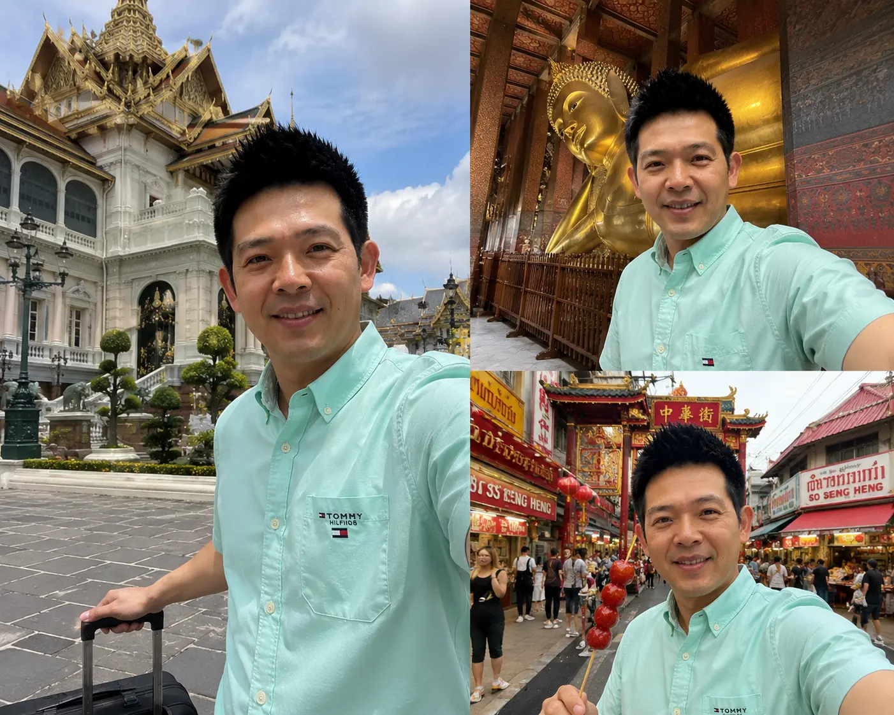

🚇 曼谷交通指南：BTS 空鐵 + MRT 地鐵最省心
曼谷塞車舉世聞名，在通勤尖峰時段，路面交通常面臨長時間停滯。善用高架與地下捷運才能玩得優雅舒服。
主要覆蓋 Siam、Asok、Thong Lo 等核心精華商圈與各大頂級購物中心。單程票價約 16-59 泰銖，多數景點可搭乘空鐵直達，完全避開地面的魔鬼塞車。
主要連接華藍蓬火車站、洽圖洽週末市集及 Sukhumvit 等地。與 BTS 在多處站點設有便捷轉乘通道，方便旅客穿梭在不同的文藝與歷史街區。
東南亞最普及的叫車應用程式。價格完全透明、免去路邊計程車漫天要價的煩惱。極度適合 3-4 人同行分攤車資，或者是短程需要直達飯店時叫用。
曼谷街頭最奇特的极速移動工具！司機身穿醒目的橘色背心，短程只需 30-50 泰銖，能以驚人的靈活度穿梭於靜止的塞車車流之中，是急著趕行程時的奇效法寶。
💡 編輯部省錢與落腳祕訣
強烈推薦入住 BTS 捷運站周邊 500 公尺內（如 Asok 阿索克、Thong Lo 東羅一帶），出門即走、完全不需要為地面塞車操心。周圍往往遍布著大量的極品路邊攤、按摩老店，一晚一間乾淨舒適雙人商旅也只需 NT$1,000 - 1,500。
🗓️ 曼谷三天兩夜極致吃貨實戰行程
不浪費任何一餐！我們為您精心調配最符合交通動線與極限美味的一日吃貨行程時間線。
老城文化洗禮與唐人街夜市

造訪金碧輝煌的蘭納古典泰皇室政教中心。欣賞巧奪天工的精緻壁畫，感受玉佛寺的神聖莊嚴。門票為 500 THB，請務必著遮蓋雙肩與雙膝的服裝。
漫步至大皇宮南側，參觀長達 46 公尺、身披純金箔的巨大釋迦牟尼臥佛，體驗心靈的寧靜。門票為 200 THB。
搭乘幾塊錢的渡輪前往湄南河對岸的鄭王廟。欣賞白瓷佛塔與雕花精緻折射。門票為 100 THB。
隨著落日餘暉亮起，整條唐人街霓虹招牌化身巨大美食市集。必吃街頭炭烤大蝦、慢火慢燉一甲子的陳老鴨麵 (60 THB)、香濃滋補的魚翅羹 (80 THB)。
搭乘 MRT 直達 Siam。用一盤軟糯Q彈、淋上濃郁鹹甜椰漿與現切芒果的芒果蜜糖吐司 (199 THB) 完美結束第一天的吃貨冒險。
大皇宮早上 08:30 即開門，請在 08:15 前抵達排隊以避開 10:00 後遊覽車人潮。若在皇宮大門外有嘟嘟車司機或當地人主動搭訕、聲稱「大皇宮今天上午有祭祀不開門、帶你坐 20 銖車去逛別的廟買珠寶」，請務必一律冷漠無視！
瘋狂掃貨與傳奇街頭美食
搭乘 BTS 直奔 Mo Chit 站。挑戰全泰國規模最大的露天市集，15,000 個攤位應有盡有。買一件清涼透氣的經典大象褲 (100 - 150 THB)，配上一杯解暑無比的椰子冰淇淋 (40 THB)。
前往水門批發市場狂熱剁手。午餐指定要吃享譽全亞洲的水門粉紅海南雞飯，軟嫩清甜的白斬雞片鋪在雞油香氣四溢的糯米飯上，一盤僅需 50 THB！
行軍兩萬步後，立刻找間乾淨清幽的連鎖 Spa 店或平價大媽老店，享受整整 2 小時舒暢無比的泰式拉筋古法指壓 (300 - 500 THB)，徹底滿血復活。
逛逛曼谷最頂級的冷氣百貨商圈。無論是精緻文創、潮牌、設計師精品，還是地下美食街的限定特產，都能讓你在最舒適的環境下一次搜齊。
想要一窺曼谷不夜城夜生活魅力的朋友，可搭 BTS 前往著名的霓虹紅燈區街漫步，品一杯清涼啤酒 (120 THB)，體驗充滿科幻魔幻感的夜幕色彩。
水上市集、船麵與高空星光酒吧
挑戰最正宗的泰國平民奇蹟！一口一碗的迷你酸辣船麵 (一碗僅 15-20 THB)，黑金色的濃鬱豬血牛肉湯配上香脆豬皮，老饕通常一口氣吃下 6-10 碗，非常壯觀！
被評為全球最乾淨的傳統市場之一。在這裡可以現點剖開最頂級、香甜軟滑的金枕頭榴槤，或採買肥美多汁的爆甜山竹與黃金芒果。
搭乘免費渡輪前往曼谷最壯麗的奢華地標 ICONSIAM。一樓奇幻無比的「室內水上市集 SookSiam」讓你吹著 22 度的舒服冷氣，無痛品嚐泰國各府最道地的特色小吃與清涼泰奶。
黃昏時分，登上 Thong Lo 的 Octave 星光空中吧或經典 Sky Bar。在浪漫的晚風微醺中，一邊品嚐雞尾酒，一邊眺望腳下湄南河璀璨的曼谷不夜城天際線，留下永恆的回憶。
大部分高檔空中酒吧設有嚴格的著裝限制 (Smart Casual)。男生嚴禁著背心、運動短褲或拖鞋，女生推薦著精緻洋裝。建議下午 17:00 前往卡位，以確保能在落日時段拍出無遮擋的橘紅霞光大片。
🍜 曼谷必吃 10 大在地街頭美食
由均在路上 Travel Lab 編輯部實地深度測評！沒吃過這十樣，別說你來過曼谷！
1. 泰式炒河粉 (Pad Thai)
฿40 - ฿60路邊老攤之王！利用微酸羅望子汁、香甜椰糖與新鮮魚露在熱鐵鑊大火快炒，加入粉嫩鮮大蝦、香乾碎、爽脆豆芽，再撒上花生碎與乾紅椒。酸甜脆香、令人食指大動。
2. 泰式酸辣蝦湯 (冬蔭功)
฿120 - ฿200集酸、辣、香甜於一身的泰式國寶湯！大火逼出香茅、南薑、檸檬葉與朝天椒的奇幻香氣，融入新鮮肥美草蝦的蝦膏，最後淋入一勺香濃椰奶，熱辣酸香、極致開胃。
3. 芒果糯米飯 (Mango Rice)
฿50 - ฿80熱帶甜點的至高傑作！將剛起鍋、散發著淡淡芭蕉葉香氣的軟糯米飯，淋上帶有微咸感的香甜高濃椰漿，配上當天現切、鮮甜細滑無纖維的泰國大黃芒果。冷熱交融，不可思議。
4. 泰式青木瓜沙拉 (Som Tum)
฿40 - ฿50木盆現擣的爽脆交響曲！爽爽的青木瓜絲、小番茄、四季豆在擂缽中與大蒜、鮮朝天椒、棕櫚糖、青檸汁、生蝦醬以及花生碎現擣交融。爽口解膩，辣勁極其剛猛！
5. 泰式打拋豬肉飯 (Pad Kra Prow)
฿50 - ฿60泰國最神級的靈魂便當！新鮮蒜頭、碎紅椒爆香，加入厚實豬絞肉與神級「打拋葉(Holy Basil)」大火急炒，逼出微甜微香的獨特鑊氣。配上邊緣焦脆、流心蛋黃的半熟炸荷包蛋。
6. 道地船麵 (Boat Noodles)
฿15 - ฿20船上發源的一口乾坤！深褐色的神級高湯由中藥材與新鮮牛血/豬血慢火熬製，口感溫潤濃厚。加入Q彈細河粉、粉嫩牛牛肉片、彈牙手工肉丸，再撒上酥脆炸豬皮、九層塔，一碗接一碗欲罷不能。
7. 唐人街炭烤叉燒串
฿30 - ฿40唐人街的深夜神級排隊點心！肥瘦相間的梅花豬肉片在紅木炭火上烤得滋滋作響，邊緣焦香酥脆、內裡肉汁四溢，刷上帶有椰奶香與香菜籽碎的蜜汁。一串吃下，令人飄飄欲仙。
8. 水門海南雞飯
฿50 / 碗清甜純粹的泰式美味！用雞油、香茅、紅蔥頭炒香的泰國香米，用香燉雞湯煮熟，米粒油亮晶瑩。鋪上用溫水慢浸、肉質細嫩的白斬雞片。配上帶有生薑、豆瓣、朝天椒的特製黑醬油。
9. 街頭香蕉煎餅 (Roti)
฿35 - ฿50街頭罪惡之王！奶油塗抹的鐵板上將麵團甩成薄如蟬翼的餅皮，放上切片香蕉，摺疊成方形並煎至兩面酥黃脆口，起鍋後豪邁地澆上濃鬱煉乳與巧克力醬。雖然卡路里爆炸，但絕對值回票價！
10. 經典手沖泰奶 (Cha Yen)
฿25 - ฿40高溫街頭的靈魂救星！泰國手標紅茶拉出紅艷茶湯，高空撞入厚厚的煉乳與淡奶。倒入整杯裝滿細碎冰塊的透明塑膠杯，一口喝下，濃香滑順、沁涼刺骨，完美平衡香辣的食物！
💰 曼谷 3 天 2 夜真實預算花費參考
為您精確拆解小資型與舒適型雙軌制預算開支，助您出門在外心中有數。
| 消費項目（按人均計） | 文青小資型 (TWD) | 中產舒適型 (TWD) |
|---|---|---|
| 來回國際機票（早鳥/廉航 vs 精品航空） | NT$4,500 - 7,000 | NT$8,500 - 14,000 |
| 精選住宿（公寓短租 vs 四/五星精品飯店 2 晚） | NT$1,000 - 2,000 | NT$3,500 - 6,000 |
| 餐食費用（街頭小吃、夜市 vs 高空酒吧與景觀餐廳） | NT$1,000 - 1,800 | NT$2,500 - 4,500 |
| 在地交通（BTS空鐵、MRT捷運 vs Grab全程叫車） | NT$400 - 800 | NT$900 - 1,500 |
| 泰式按摩與娛樂（街邊老店 vs 連鎖精緻 Spa 2小時） | NT$500 - 1,000 | NT$1,500 - 3,000 |
| 不含機票總花費估算 | NT$2,900 - 5,600 起 | NT$8,800 - 15,000 起 |
🏨 曼谷住宿區域：強烈推薦暹羅 (Siam) 與阿索克 (Asok)
我實際住過且極力推崇的黃金商圈，交通極致便利，性價比高得令人難以置信。
暹羅 (Siam) ∙ 商業心臟區
曼谷的最核心地帶，三大頂級商場交匯處。BTS 的一、二號線在這裡交匯轉乘，無論是搭空鐵前往老城、湄南河還是大商場都極其順滑，是第一次來曼谷的絕對首選。
阿索克 (Asok) ∙ 雙捷運交匯
BTS (Asok 站) 與 MRT (Sukhumvit 站) 兩大鐵路唯一的十字交匯點。在這裡落腳意味著你可以同時搭乘高架空鐵與地鐵，去洽圖洽週末市集或唐人街都暢通無阻。
均在路上讀者特惠住宿推薦 (Trip.com)
地理位置極佳、近捷運站且乾淨舒適的首選飯店
在曼谷自由行，我最常選擇入住暹羅（Siam）或阿索克（Asok）捷運站旁的精選飯店。出門步行 5 分鐘內即可抵達 BTS 空鐵，前往暹羅廣場、MBK、Central World 都極為便捷。房間明亮、隔音極佳，目前在 Trip.com 預訂還能享受讀者專屬的限時優惠。
* 提示：曼谷精華區熱門飯店在旺季（11 月至 2 月）常面臨客滿，建議提早 1 - 2 個月完成預訂以確保最划算的價格。
2026 東南亞避坑神書：泰國、新加坡、越南落地防坑防騙自救手冊
收錄泰國 Grab/Bolt 叫車不踩雷指南、新加坡出入境電子申報（SG Arrival Card）步驟詳解、越南換匯防假鈔心法，以及東南亞各國三大電信上網卡實測評估。讓你小資窮遊也能極致安心！